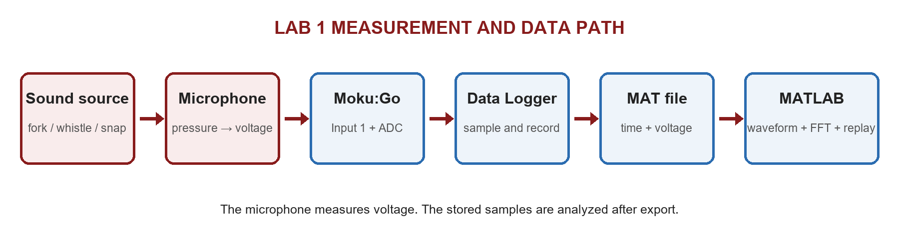
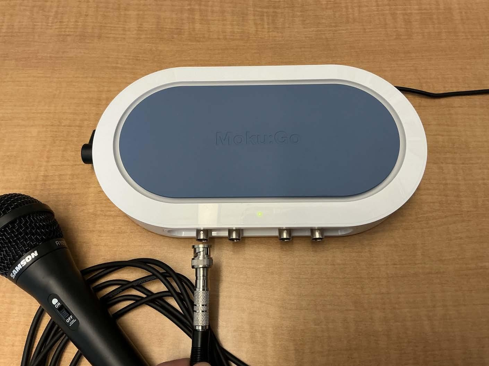
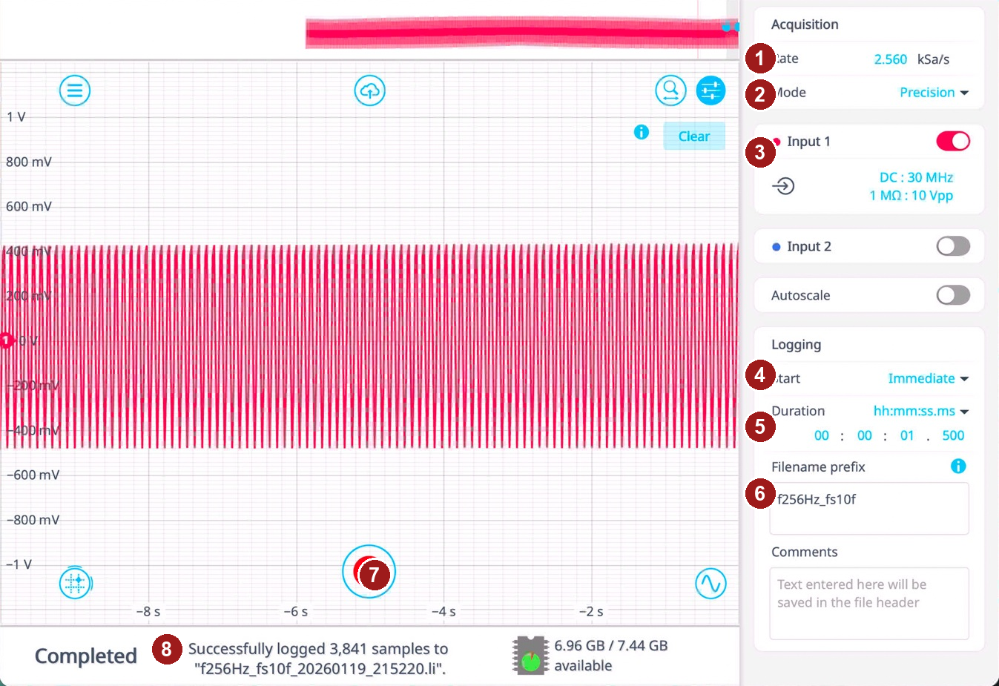
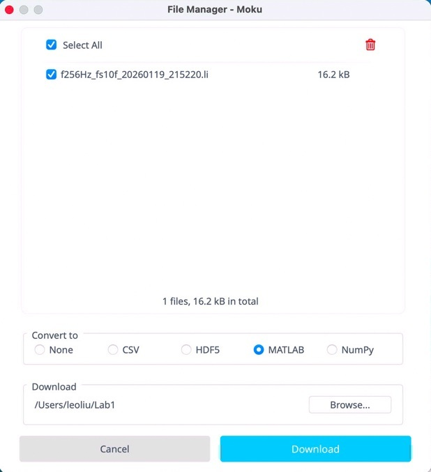

Fall 2026 · Laboratory 1
Dynamic data sampling
and frequency analysis
Record three sounds with five sample-rate settings, verify the exported MAT data, and explain what sampling changes in the waveform, spectrum, and replayed sound.
Measurement setup and signal path

The microphone converts changing sound pressure to voltage. Moku:Go samples that voltage, Data Logger stores the samples, and MATLAB analyzes the exported MAT file.

Connect the microphone cable to the assigned Moku:Go input and confirm the active channel with the GTA.
Laboratory instructions
Fall 2026 procedure, required data matrix, Moku:Go steps, GTA verification, and data backup
MATLAB analysis and replay script
Select one Moku MAT file, recover the achieved sample rate, plot the waveform and FFT, and replay at a valid rate
Lab 1 report instructions
Required questions, equations, evidence, organization, interpretation checks, and final checklist
Pre-Lab 1 notebook
Complete calculations, predictions, tables, figures, and explanations; submit one Word or PDF file
Required acquisition matrix
| Sound source | Frequency reference | Required sample rates | Minimum duration |
|---|---|---|---|
| Tuning fork | Frequency printed on the fork | 100f, 10f, 3f, 1.4f, 1f | 1 second per case |
| Whistle | State how f is selected from a high-rate pilot record | 100f, 10f, 3f, 1.4f, 1f | 1 second per case |
| Finger snap | State the frequency-band or reference choice approved by the GTA | 100f, 10f, 3f, 1.4f, 1f | 1 second per case |
Data Logger screen

- Rate: enter the required sample rate and check whether the unit is Sa/s, kSa/s, or MSa/s.
- Mode: use the GTA-specified mode and record it.
- Input: enable the microphone channel and disable unused channels.
- Start: choose Immediate or Delayed depending on how the sound will be produced.
- Duration: record at least one second for every required case.
- Filename: include source, reference frequency, sample rate, and trial.
- Record: press only when the source and settings are ready.
- Status: confirm that logging completed, then inspect the waveform before accepting the trial.
Export to MATLAB

Select the correct recording, choose MATLAB under Convert to, choose a destination folder, and press Download. Keep the native recording until the MAT file opens correctly.
What the MATLAB script does
- Loads one Moku:Go MAT file and checks its structure.
- Calculates the achieved sample rate from the time column.
- Reports sample count, duration, mean, RMS, FFT-bin spacing, and strongest non-DC peak.
- Creates a labeled time-domain waveform and one-sided amplitude spectrum.
- Replays a normalized listening copy using the measured rate or a supported resampled rate.
The listening copy is qualitative. Resampling for a sound card cannot restore frequencies already lost or aliased during acquisition.
Report focus
Compare the five rates for all three sounds in time, frequency, and playback. Predict aliasing before interpreting the FFT. Use the high-rate tuning-fork record as a reference, distinguish volts from hertz, and explain why a plausible RMS value does not prove that the frequency content was recorded correctly.
Submit through Canvas. The Canvas assignment controls the due date, file limits, and any updated requirement.